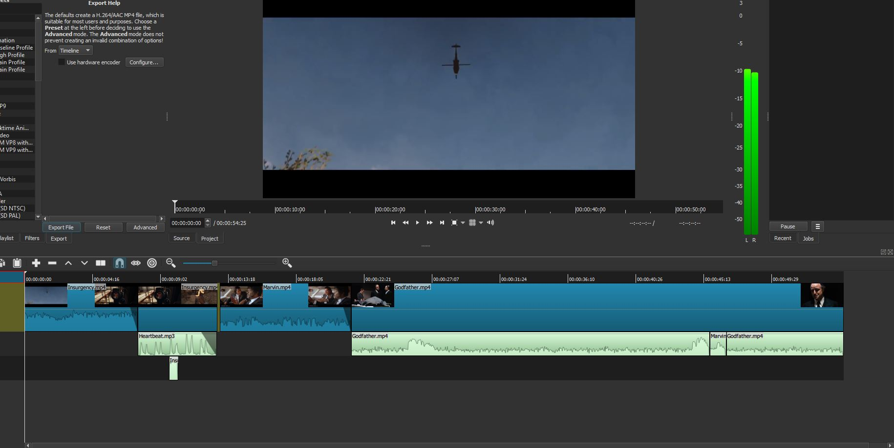

<h3>First, my final edit. I used three different clips, and one distinct sound effect.</h3>
<video width="1920" height="1080" controls>
<source src="Final.webm" type="video/webm">
</video>

<p>Sound Effect: Heartbeat</p>
<audio controls>
<source src="Heartbeat.mp3">
</audio>


<video width="720" height="480" controls>
<source src="Godfather.mp4" type="video/webm">
</video>
<h2><a href="https://www.youtube.com/watch?v=Jh1sHhpXuZY">Godfather Part I.</a></h2>
<p>Clip #1</p>


<video width="720" height="480" controls>
<source src="Marvin.mp4" type="video/webm">
</video>
<p>Clip #2</p>
<h2><a href="https://www.youtube.com/watch?v=LBBni_-tMNs">Pulp Fiction Clip.</a></h2>
<p>Clip #1</p>


<video width="720" height="480" controls>
<source src="Insurgency.mp4" type="video/webm">
</video>
<p>Clip #3</p>
<h2><a href="https://www.youtube.com/watch?v=LBBni_-tMNs">Insurgency Trailer.</a></h2>


<p>Shotcut Screencap</p>
